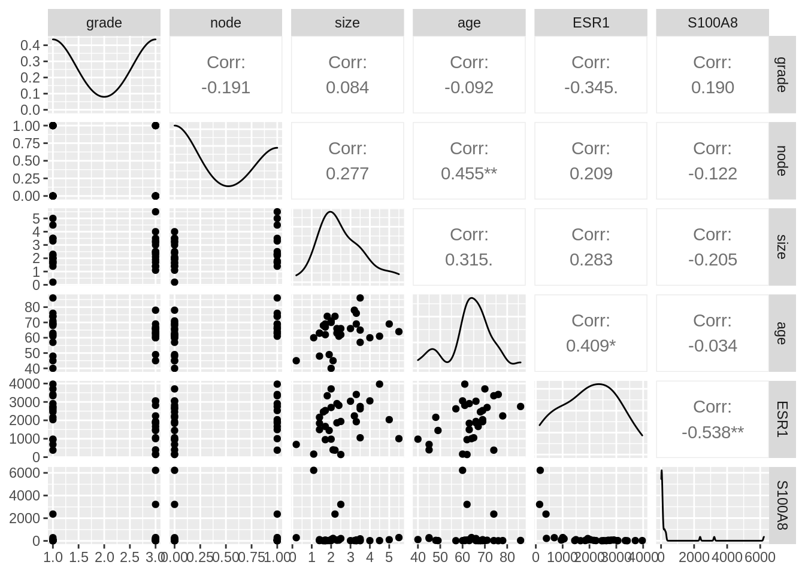
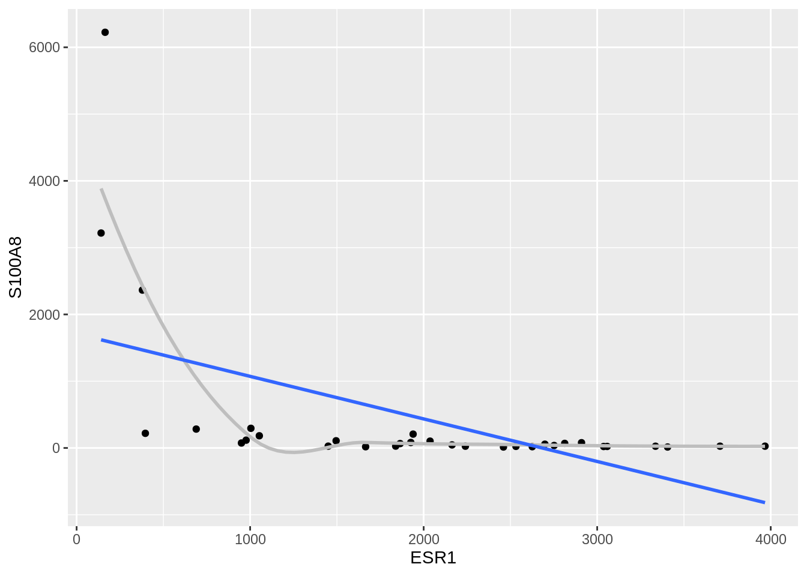
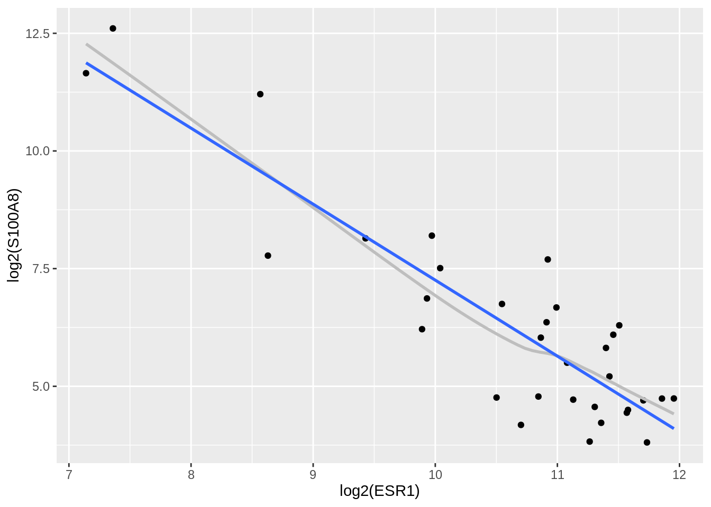
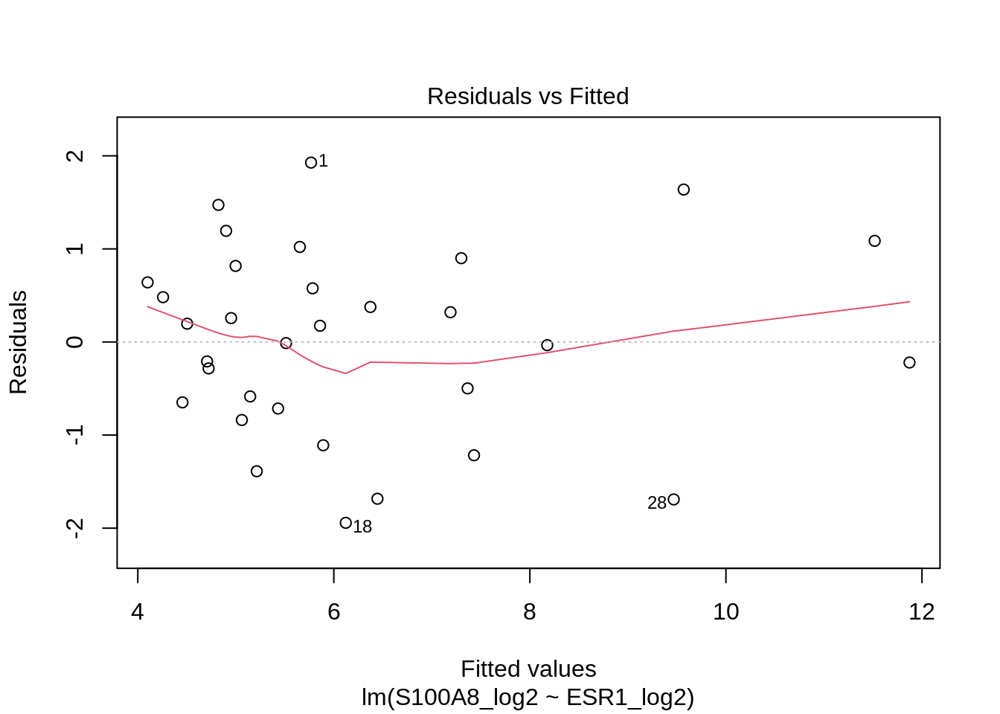
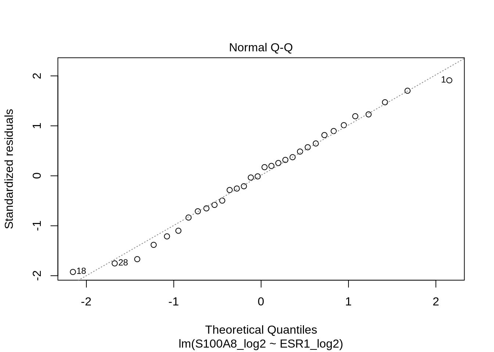
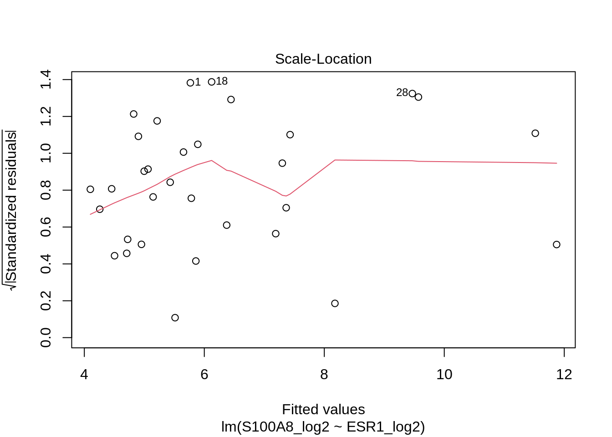
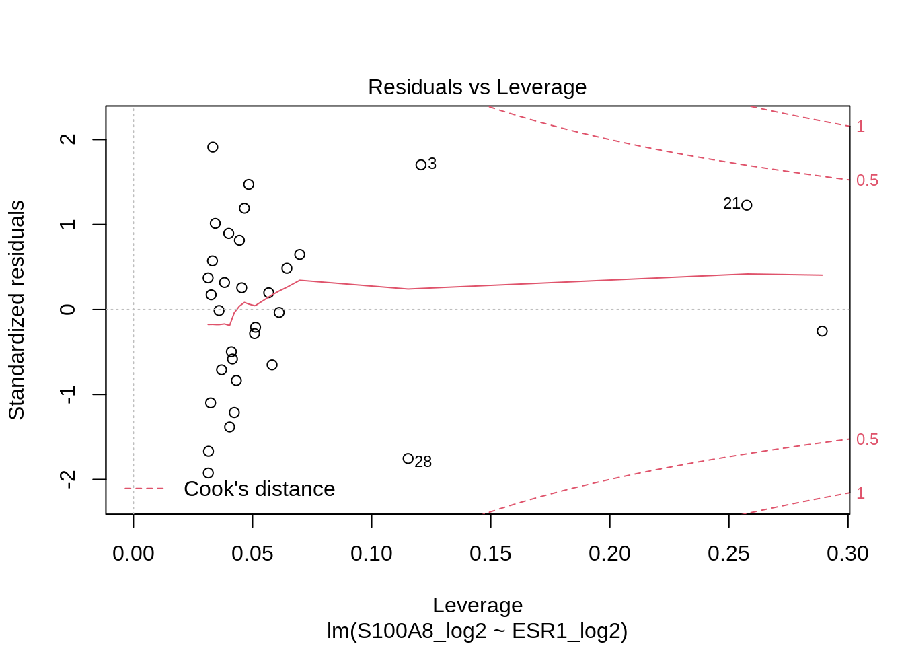

Subset of study https://doi.org/10.1093/jnci/djj052
32 breast cancer patients with estrogen receptor positive tumour that had tamoxifen chemotherapy. Variables:
ESR1 in active in \(\pm\) 75% of breast cancer tumours.
Expression of ER gene positive for treatment: tumour responds to hormone therapy
Proteins of S100 family often dysregulated in cancer
- S100A8 expression represses immune system in tumour en creates an environment of inflammation that promotes tumour growth.library(Rmisc)
library(tidyverse)
library(GGally)brca <- read_csv("https://raw.githubusercontent.com/GTPB/PSLS20/master/data/breastcancer.csv")
brcaIs the expression of the S100A8 gene associated with that of that of the ESR1 gene?
There are many variables in the data, we will plot all variables in a scatterplot matrix using the GGally package.
ggpairs(brca[, -(1:4)])
We now focus on the association between S100A8 expression and the ESR1 expression.
brca %>%
ggplot(aes(x = ESR1, y = S100A8)) +
geom_point() +
geom_smooth(se = FALSE, col = "grey") +
geom_smooth(method = "lm", se = FALSE)
The association of S100A and ESR1 does not appear to be linear.
brca %>%
ggplot(aes(x = log2(ESR1), y = log2(S100A8))) +
geom_point() +
geom_smooth(se = FALSE, col = "grey") +
geom_smooth(method = "lm", se = FALSE)
Upon log transformation the data are showing a linear association. Is this association strong enough to be able to conclude that the S100A8 gene expression is associated to the ESR1 gene expression?
We first calculate the Pearson and Spearman correlation based on the original data and the log2 transformed data
Pearson correlation
brca <- brca %>%
mutate(S100A8_log2 = log2(S100A8), ESR1_log2 = log2(ESR1))
brca %>%
select(S100A8_log2, ESR1_log2) %>%
cor() S100A8_log2 ESR1_log2
S100A8_log2 1.000000 -0.891199
ESR1_log2 -0.891199 1.000000Spearman correlation
brca %>%
select(S100A8_log2, ESR1_log2) %>%
cor(method = "spearman") S100A8_log2 ESR1_log2
S100A8_log2 1.000000 -0.733871
ESR1_log2 -0.733871 1.000000Both the Pearson and Spearman correlation are negative. Note, that the Spearman correlation is much larger in absolute value than the Pearson correlation on the original expression measurements. Indeed, the Pearson correlation is affected by the non linear association at the original scale.
On the log scale the Pearson correlation is much higher. The spearman correlation, however, remains because it is based on rank transformed data.
We will model the data on the log2 scale and we assume the following statistical model:
\[Y_i\vert X_i\sim N(\beta_0+\beta_1X_i,\sigma^2)\]
with \(Y_i\) the log2 transformed S100A8 gene expression and \(X_i\) the log2 transformed ESR1 gene expression.
We fit the model to the data using the lm function and we first assess the assumptions. Because the subjects were selected at random from the population they are independent. We still have to check the following assumptions.
lm2 <- lm(S100A8_log2 ~ ESR1_log2, data = brca)
plot(lm2)
summary(lm2)
Call:
lm(formula = S100A8_log2 ~ ESR1_log2, data = brca)
Residuals:
Min 1Q Median 3Q Max
-1.94279 -0.66537 0.08124 0.68468 1.92714
Coefficients:
Estimate Std. Error t value Pr(>|t|)
(Intercept) 23.401 1.603 14.60 3.57e-15 ***
ESR1_log2 -1.615 0.150 -10.76 8.07e-12 ***
---
Signif. codes: 0 '***' 0.001 '**' 0.01 '*' 0.05 '.' 0.1 ' ' 1
Residual standard error: 1.026 on 30 degrees of freedom
Multiple R-squared: 0.7942, Adjusted R-squared: 0.7874
F-statistic: 115.8 on 1 and 30 DF, p-value: 8.07e-12In the residuals vs fitted values plot we observe that the residuals are nicely spread around zero with more or less the same variance and we do not observed a trend in the residuals so there is no indication on deviations from linearity and homoscedasticity.
The QQ-plot further shows no substantial deviations from normality. So the assumptions hold.
We can now assess a formal hypothesis test to for the linear association between the S100A8 gene and the ESR1 gene expression at the log2 scale.
We can translate the hypothesis that there is an association between the S100A8 and ESR1 gene expression in terms of the slope of the model, so under the alternative hypothesis \(\beta_1\) is different from zero. \[H_1: \beta_1 \neq 0\]
With data we can never prove a hypothesis, so we therefore falsify the opposite: the null hypothesis the there is no association between the expression of both genes:
\[H_0: \beta_0 = 0\] We can do this by adopting a t-test on the slope and by using confidence intervals on the slope.
summary(lm2)
Call:
lm(formula = S100A8_log2 ~ ESR1_log2, data = brca)
Residuals:
Min 1Q Median 3Q Max
-1.94279 -0.66537 0.08124 0.68468 1.92714
Coefficients:
Estimate Std. Error t value Pr(>|t|)
(Intercept) 23.401 1.603 14.60 3.57e-15 ***
ESR1_log2 -1.615 0.150 -10.76 8.07e-12 ***
---
Signif. codes: 0 '***' 0.001 '**' 0.01 '*' 0.05 '.' 0.1 ' ' 1
Residual standard error: 1.026 on 30 degrees of freedom
Multiple R-squared: 0.7942, Adjusted R-squared: 0.7874
F-statistic: 115.8 on 1 and 30 DF, p-value: 8.07e-12confint(lm2) 2.5 % 97.5 %
(Intercept) 20.128645 26.674023
ESR1_log2 -1.921047 -1.308185Both the t-test and the confidence interval indicate that association is extremely significant. The interval moreover shows that the association is biologically relevant.
We will transform slope and the confidence interval back to the original scale to interpret the results in terms of fold changes.
2^(coef(lm2)) (Intercept) ESR1_log2
1.107908e+07 3.265519e-01 2^confint(lm2) 2.5 % 97.5 %
(Intercept) 1.146373e+06 1.070733e+08
ESR1_log2 2.640628e-01 4.038287e-01There is an extremely significant negative association between the S100A8 gene expression and that of ESR1 (\(p<<0.001\)).
A patient with an ESR1 expression that is 2 times the expression of that of another patient will on average have an S100A8 expression that is 3.06 times lower (95% CI [2.48,3.79]).